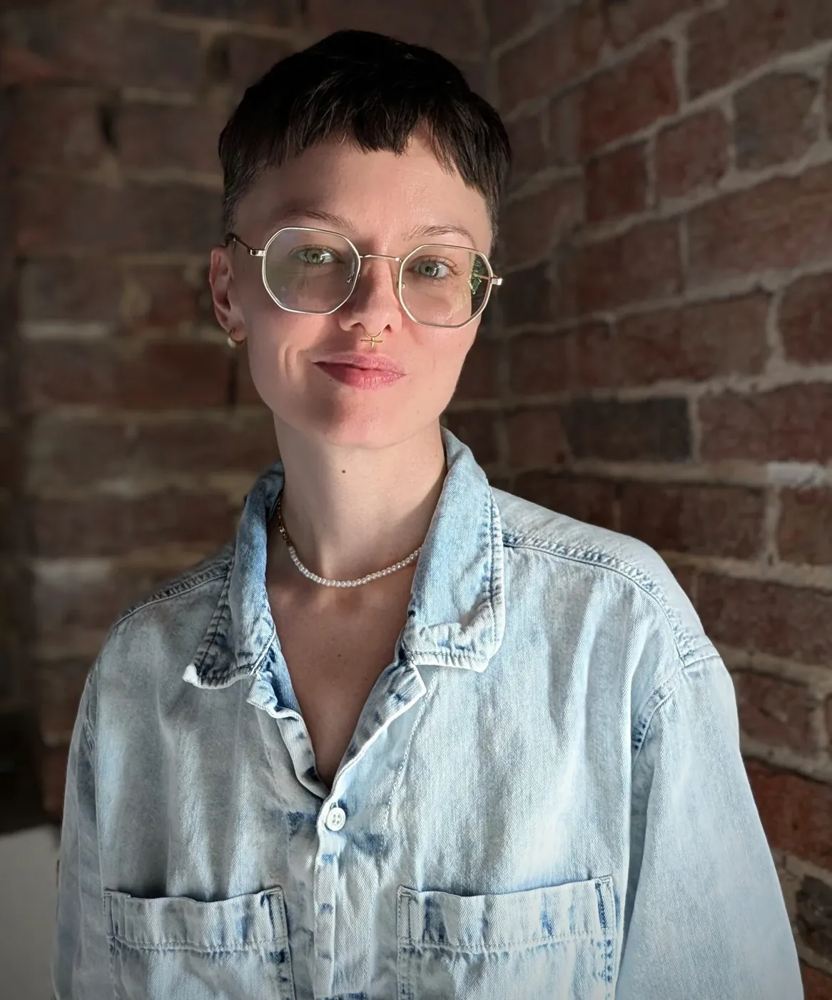

This is for the weirdos
Stop living for others and start dealing with the real sh*t
virtualFree
consult!
- Queer
- Neurodivergent
- Non-monogamous
- Couples & polycules
- No pathologizing
- Real talk
Don't worry, we're all weird here.
I built Neurospace Coaching because I was done watching people fall through the cracks of a system that wasn't built for them — and honestly, because I needed something different too.
My background is clinical. Five years as a therapist, a Master's degree, the whole thing. But what I do now isn't therapy, it's more direct, more collaborative, and a lot less interested in keeping you comfortable with the status quo. If conventional approaches haven't been cutting it, that's not a you problem.
What coaching with me actually looks like: someone willing to get in the mess with you and then help you figure out what to do about it. We'll look at what's keeping you stuck, get clear on what you actually want, and build toward that— whether that's who you are, how you're showing up in your relationships, or just how you want to be living your life.

Curious, passionate, and realistic
Curious, passionate, and realistic— that's how I'd describe myself and my approach.
Curiosity is non-negotiable. Nothing changes without a willingness to ask hard questions and actually look at the answers. I've seen firsthand what happens when people lead with it: they learn, they shift, they evolve. That's what coaching is for.
I do this work because I genuinely care about emotional health and human connection. I want you to be the cool ass person you are and live accordingly. If I get to play a role in that, I'm grateful.
The realist in me means I'm not just here to talk things through, I'm here to help you turn what you're thinking and hoping into actual movement. I won't pretend this is easy or that the world isn't on fire. But I will challenge you to think and do differently, while being a space where your real feelings can land without judgment.
I believe in your right to joy, pleasure, and connection. Let's build more of that.
I'm based in Berlin and work virtually with clients across Europe, North America, and beyond providing English-speaking coaching and counselling, Monday–Thursday, 2pm–9pm CET.
Get startedFiguring out what's not working, and building something better
Whether you'd call it coaching or counselling, what we're doing together is figuring out what's not working and building something better. I work with:
Identity and self-exploration
Who you are, who you want to be, and what's been getting in the way
Relationship coaching and counselling
Couples, partners, and polycules navigating communication, conflict, and connection
Non-monogamy and ethical non-monogamy (ENM)
Whether you're new to it or untangling years of patterns
Neurodivergence
ADHD, autism, and more. Everything that comes with navigating a world that wasn't designed for your brain
Life transitions and burnout
Career pivots, relocations, identity shifts, starting over
Immigrant, Expat, and cross-cultural stress
Whether you’re in a cross-cultural relationship (I am) or navigating life as an immigrant in a new country, I see you
If you're not sure whether what I do is a fit for what you need, that's exactly what a free consultation is for.
Authenticity, agency, autonomy
Authenticity
Okay, I know this word can sound corny or over-done but I really do believe that when we can access our most genuine self, we are able to experience life in a much richer color. And when I say authentic, I don’t mean not giving a f*ck about what other people think, I just mean being as true to yourself as possible in any given moment.
Agency
I use this word a lot because it’s at the core of what I believe causes suffering: a lack or stripping away of agency. When we don’t feel like active and consenting participants in our lives, we experience immense emotional and mental distress. By my logic, reclaiming agency is key to growth.
Autonomy
Similar but different than agency, it’s imperative in my opinion, that we foster access to our own autonomy. Not in the sense of individualism, but rather the experience of being a differentiated but interdependent self that coexists with others. When we feel autonomous, we actually have more capacity for connection and a felt sense of safety.
Ready to start?
Reach out to schedule a consultation!
elliot@neurospacecoaching.com